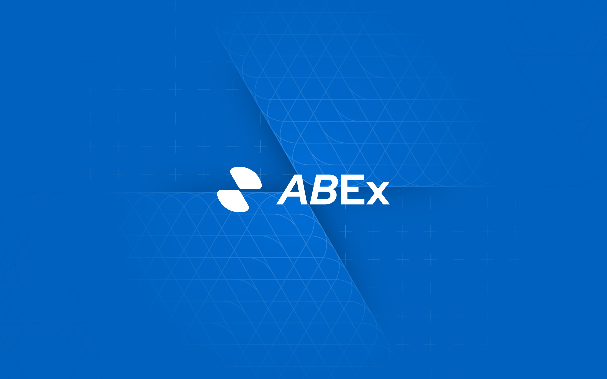
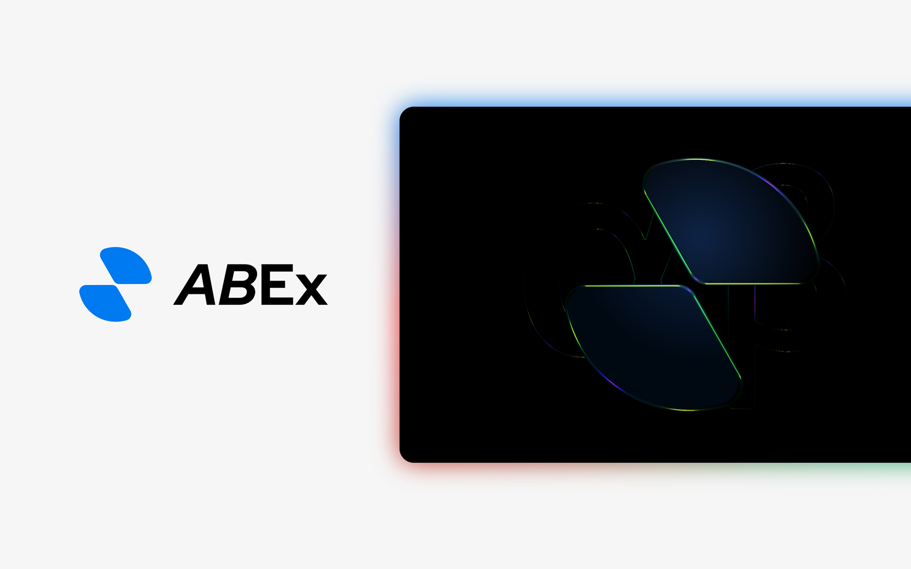
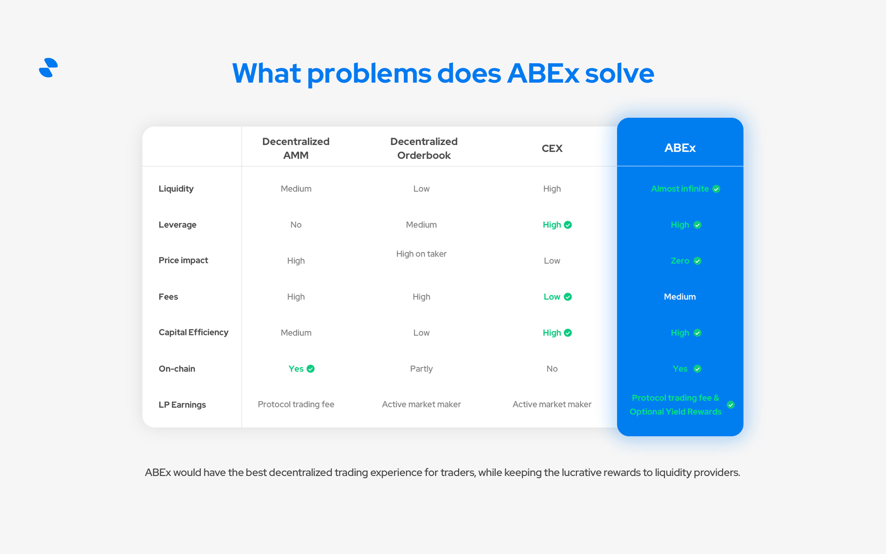
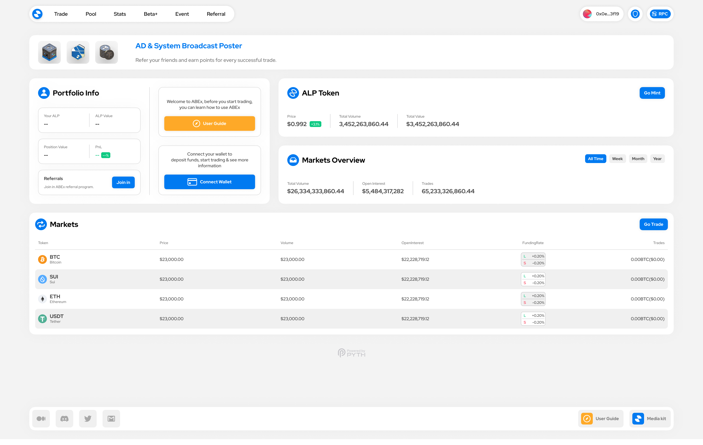
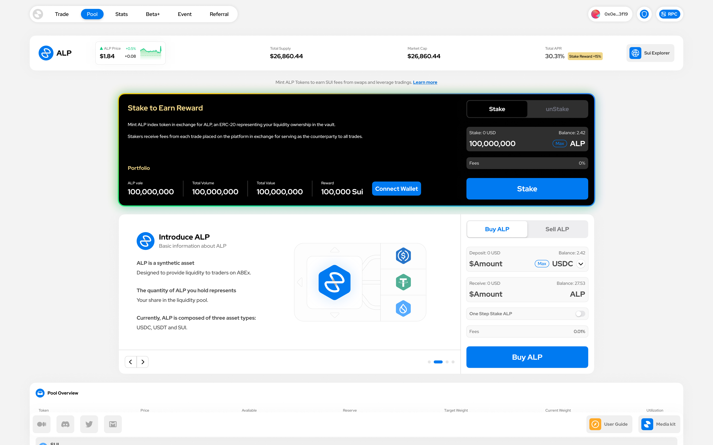
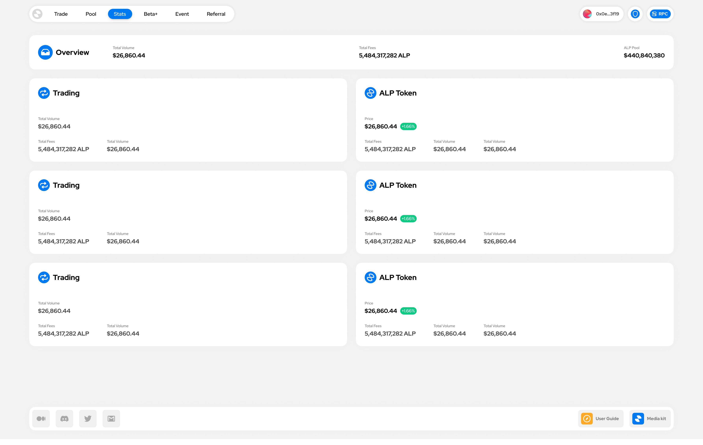

The project needed more than isolated screens: a coherent identity, a clear product interface, and a visual system that could stay consistent from planning to public release.

ABEx / Brand & Product Design
Designing ABEx from identity to launch
ABEx / Brand & Product Design
Designing ABEx from identity to launch
ABEx was a full-scope design project for a leading financial derivatives service platform. I led the visual direction from logo and product-line planning to VI, UI, UX interaction, official website design, web UI, and launch communication materials.
01 - Project Overview
Building a recognizable financial product from brand to public launch.
I covered the main visual design, including the logo, product-line visual planning, VI and UI design, style unification, official website, web UI, and Twitter/X launch materials.
Visual foundation
Start from a recognizable mark.
The ABEx logo was inspired by a butterfly with open wings. As financial products become increasingly heavy and complex, I wanted the mark to suggest a lighter financial experience that helps release users from that burden. It also reads as two envelope flaps, bringing a sense of formality and stability to the service. The outer contour forms a Mobius loop, symbolizing continuous financial flow. From this core symbol, I developed a flexible set of variants for different use cases.
Connect VI and product UI.
I connected the VI system with UI decisions so the official website, web UI, and public communication assets could carry one recognizable visual language.
Design system direction
Light dashboard system
A bright product language for fast financial decisions.
The ABEx interface uses a clean white canvas, floating rounded panels, crisp blue actions, and compact data patterns so portfolio status, market movement, and trading entry points stay easy to scan.
abex.bluePrimary actions, active states, and brand-led interface moments.
cloud.whiteFloating cards and dashboard panels with soft depth.
pill.navNavigation shells, compact controls, and low-contrast section backgrounds.
metric.cardsLabels, headline numbers, and dense financial data hierarchy.
table.flowStatus tags, market states, and fast-scanning table feedback.
cta.systemGuide moments that stand apart from primary trading actions.

02 - User Favorite
Introducing Abot emojis.
I created a series of cute, playful emoji expressions that users quickly grew to love. In the community chat, people often use these adorable Abots to express their current mood. The emoji set has now launched in the Discord chat.
At the same time, Abot became fully integrated into the product and launch system. In the product, it appears as the customer support robot; across campaign materials, it shows up as a recurring character. It is more than an emoji pack. It became the project mascot, and both the team and users genuinely love this little robot.
Emotional Shortcut
Abot gave users a cute, immediate way to express their mood in chat and turn small reactions into a shared habit.
ExpressionProduct Companion
Inside the product, Abot became the customer support robot, giving functional moments a warmer and more recognizable face.
SupportMascot System
Across Discord and launch materials, Abot appeared as a recurring character and grew from an emoji set into the project mascot.
MascotExplore ABEx Abot emojis
03 - Product UI Design
Turning a financial product into a clear, navigable interface.
Clarify the product model
Structured pages and flows so users could understand high-density financial information with less friction.
From setup to launch
Designed and refined the product interface while keeping visual continuity across each launch stage.
Explain the product
Created the official website experience to communicate positioning, product features, and visual credibility.
Design for repeated use
Built web UI, interaction details, and state patterns for a product that users would revisit frequently.
Selected project assets






04 - A New Form
Bringing game-like rewards into a financial product.
ABEx introduced a reward format more commonly seen in games: reward mystery boxes. To support this direction, I used 3D software to create the reward objects so they could appear as dimensional items rather than flat images. The 3D form made the rewards feel more refined and opened more possibilities for reward distribution, reveal moments, and product interactions.
Mystery Box Rewards
Introduced a game-like reward container so financial incentives could feel more tangible, memorable, and worth opening.
RewardDimensional Assets
Modeled the reward objects in 3D so they could carry depth, lighting, and material detail instead of feeling like flat images.
ObjectReveal Moments
The dimensional format created room for richer reward delivery, opening animations, and celebratory product interactions.
Interaction3D reward viewer
05 - My Role & Scope
I owned the design work from identity to launch delivery.
Main Visual Design
Designed the ABEx logo, visual direction, and the foundation of the brand identity.
BrandProduct-Line Planning
Planned the product-line visual logic and unified the design language across VI and UI.
SystemInterface Design
Led the UI and UX interaction design from project setup to public launch.
LaunchWebsite & Web UI
Designed the official website and web UI so product, brand, and communication shared one visual language.
ProductTwitter/X Materials
Created launch announcement visuals and supporting materials for public communication.
LaunchExperience Polish
Refined the product experience to improve clarity, consistency, and user satisfaction.
Quality06 - Outcome & Reflection
The design work helped the product present itself as a category leader.
I completed the project's full design workload and helped ABEx reach a leading position among peer products of the same period. The final product experience received very high user satisfaction.
Identity has to work inside the product
The strongest VI choices were the ones that could become UI surfaces, website sections, and launch assets.
Complex products need visual discipline
Clear hierarchy, restrained color, and reusable components made dense financial information easier to scan.
Launch materials need the same system
Public communication felt stronger when the website, product UI, and social materials shared one visual language.
Next project
SODA Protocol
Brand VI / Product UI